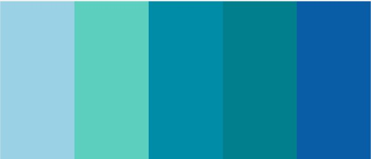

CORES
NA TECNOLOGIA
Explore o universo das cores, suas propriedades físicas, percepção visual e aplicações na arte, design e tecnologia.
Explore o universo das cores, suas propriedades físicas, percepção visual e aplicações na arte, design e tecnologia.
A cor azul ocupa um lugar de destaque no universo da tecnologia. Presente em logotipos, interfaces digitais, aplicativos, sistemas operacionais e equipamentos eletrônicos, ela se tornou símbolo de inovação, confiança e inteligência. Grandes empresas de tecnologia como IBM, Intel, Facebook e Samsung utilizam diferentes tons de azul para transmitir segurança, estabilidade e credibilidade ao público.
Como vimos, na psicologia das cores, o azul está associado à calma, à lógica e à comunicação. Essas
características combinam diretamente com os objetivos da tecnologia moderna: facilitar conexões,
organizar informações e transmitir eficiência. Em ambientes digitais, o azul também reduz a sensação
de agressividade visual, tornando interfaces mais agradáveis e intuitivas para os usuários.
Outro fator importante é a relação do azul com o futuro e a inovação. Filmes de ficção científica,
painéis holográficos e sistemas digitais frequentemente usam luzes azuladas para representar avanço
tecnológico. Esse padrão visual influenciou o design contemporâneo, fazendo com que o azul se
tornasse quase uma “linguagem visual” da era digital.
Além do aspecto simbólico, o azul possui vantagens práticas no design tecnológico. Tons azuis criam
contraste eficiente em telas, facilitando leitura e navegação. Por isso, muitos aplicativos e
plataformas adotam essa cor em botões, links e menus principais. Em interfaces escuras, o azul neon
também ganhou popularidade por transmitir modernidade e sofisticação.
No contexto da inteligência artificial e da computação avançada, o azul continua sendo dominante.
Ele aparece em assistentes virtuais, painéis de dados e identidades visuais ligadas à inovação. A
cor ajuda a criar uma percepção de precisão, confiança e controle — elementos essenciais em
tecnologias cada vez mais presentes no cotidiano.
Assim, o azul deixou de ser apenas uma escolha estética e passou a representar a própria identidade
do mundo tecnológico. Sua presença comunica modernidade, segurança e conexão, tornando-se uma das
cores mais influentes da transformação digital.
Empresas de tecnologia usam o azul porque a cor transmite confiança, segurança e inteligência.
Em aplicativos e plataformas digitais, o vermelho é muito usado em notificações e alertas porque
chama rapidamente a atenção do cérebro humano.
O famoso “dark mode” não é apenas estética. Interfaces escuras ajudam a diminuir o brilho excessivo das telas, especialmente em ambientes com pouca luz.
Criando uma identidade tecnológica com a cor azul
Objetivo
Desenvolver a criatividade e compreender como a cor azul é utilizada no universo da tecnologia para
transmitir inovação, confiança e modernidade.
Proposta
Criar um produto visual ligado à tecnologia utilizando o azul como cor principal.
Opções de criação
Escolha uma das atividades abaixo:
Criar o logotipo de uma empresa de tecnologia fictícia.
Desenvolver a tela inicial de um aplicativo.
Produzir um cartaz sobre inteligência artificial ou inovação digital.
Montar um protótipo de site futurista.
Criar um robô ou dispositivo tecnológico desenhado em papel.
